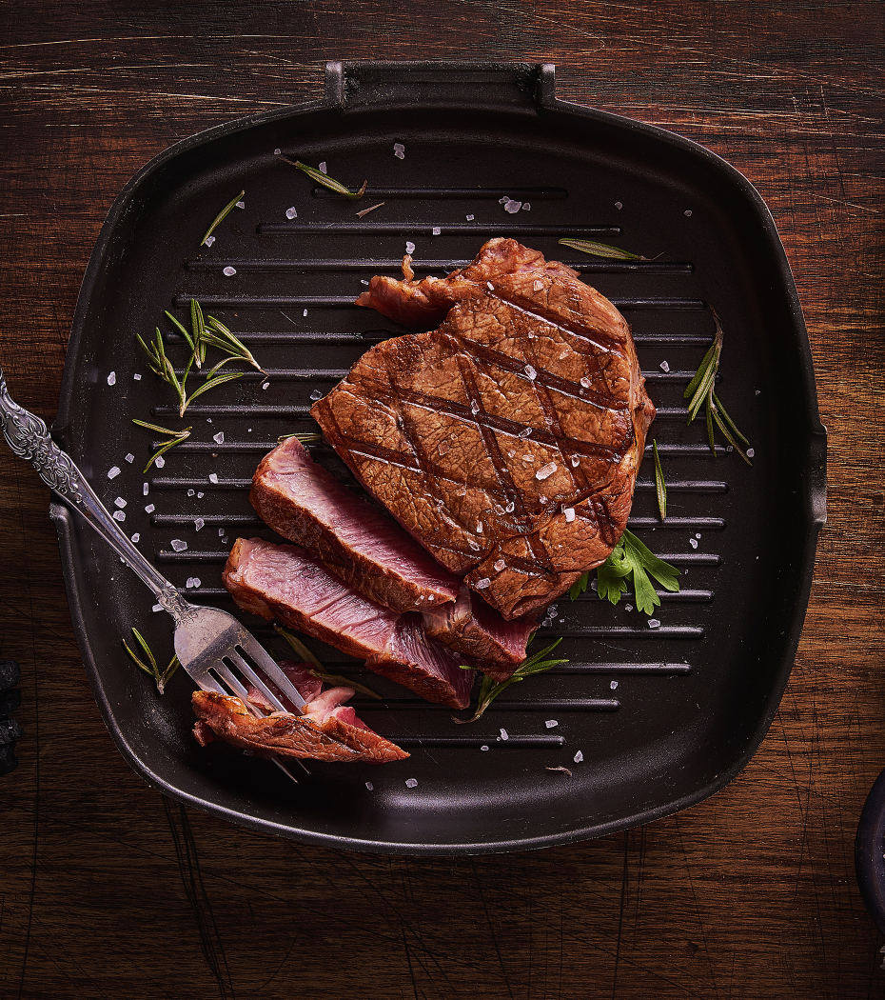

Стейк классический
Рецепт:
- Корейка - 500 г
- Перец душистый молотый - по вкусу
- Паприка - 1 ч. л.
- Горчица - 2/3 ст. л.
- Соль крупная - по вкусу
- Растительное масло - 1 ст. л.
Приготовление
- Подготовьте все необходимые ингредиенты. Свинину я советую использовать только свежую, не мороженную, тогда стейк получится вкуснее.
- Приготовьте маринад. Смешайте перец, паприку и горчицу. Перемешайте. Смажьте маринадом стейк, но не солите. Дайте промариноваться мясу в течение 5-10 минут.
- Выложите мясо на сковороду и посолите. Соль выводит соки из мяса наружу, а нужно, чтобы все они остались внутри мяса. Также мясо следует с обеих сторон смазать растительным маслом, например оливковым маслом.
- Жарьте мясо на среднем огне 7-9 минут. На поверхности должна образоваться красивая румяная корочка. Подавайте стейки горячими со свежей зеленью и любимым гарниром.